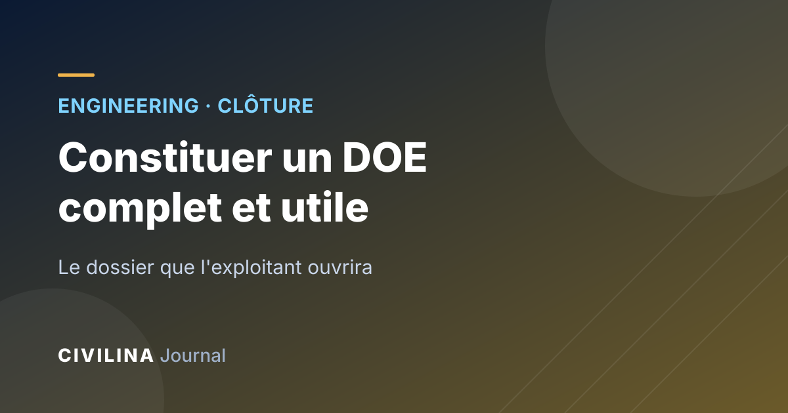

Accueil › Journal › Constituer un DOE
Engineering · ClôtureConstituer un DOE complet : le dossier des ouvrages exécutés, pièce par pièce

Le chantier est terminé, les réserves sont levées, et il reste une dernière pièce, souvent négligée : le dossier des ouvrages exécutés. C'est pourtant le document que l'exploitant ouvrira pendant des décennies, pour entretenir, réparer ou transformer l'ouvrage. Un DOE incomplet peut aussi bloquer la clôture du marché. Voici comment le constituer pièce par pièce, et surtout au fil du chantier.
À quoi sert le DOE
Le dossier des ouvrages exécutés, ou DOE, rassemble les documents qui décrivent l'ouvrage tel qu'il a été réellement construit, et non tel qu'il avait été prévu. Selon les pays et les contrats, on parle aussi de dossier de récolement ou de dossier de fin de travaux. Il sert à plusieurs publics :
- l'exploitant, pour faire fonctionner et entretenir les installations ;
- le maître d'ouvrage, pour connaître précisément son patrimoine et préparer les travaux futurs ;
- les entreprises qui interviendront plus tard, pour savoir où passent les réseaux, ce que porte une dalle ou quels matériaux ont été utilisés ;
- les experts, en cas de désordre, pour retrouver ce qui a été fait, contrôlé et accepté.
Sa composition exacte et son délai de remise sont fixés par le marché. Il est souvent exigé à la réception ou dans un délai convenu après celle-ci, et conditionne fréquemment le règlement final.
Le contenu type
| Rubrique | Pièces habituelles |
|---|---|
| Pièces générales | Sommaire, liste des intervenants, coordonnées des entreprises et fournisseurs |
| Plans | Plans conformes à l'exécution, par lot et par niveau, et plans des réseaux |
| Notes et calculs | Notes de calcul et notes techniques dans leur version finale |
| Matériaux et équipements | Fiches techniques, certificats et déclarations des produits mis en œuvre |
| Contrôles | Synthèse des ITP, PV d'inspection et d'essais, rapports de laboratoire |
| Exploitation | Notices de fonctionnement et d'entretien, programmes de maintenance |
| Garanties | Garanties des équipements et des travaux, avec leurs dates et conditions |
| Réception | PV de réception, liste des réserves et PV de levée |
La réglementation de certains pays impose en plus des dossiers spécifiques, par exemple pour la sécurité des interventions ultérieures. Ils sont à identifier dès le début du projet.
Les plans conformes à l'exécution
Les plans conformes à l'exécution sont la pièce la plus utile du DOE, et la plus difficile à produire à la fin. Ils doivent intégrer toutes les modifications intervenues en cours de chantier : déplacement d'une trémie, réseau dévié, ferraillage modifié, équipement remplacé.
La seule méthode fiable consiste à annoter au fil de l'eau. Chaque modification validée est reportée sur un jeu de plans de chantier, avec la date et la référence de la décision ; ces annotations sont ensuite reprises dans les fichiers. Attendre la fin du chantier pour « faire les plans du DOE » revient à reconstituer de mémoire des décisions prises des mois plus tôt.
Organiser le DOE avec la WBS
Un DOE de plusieurs milliers de pages n'est utile que s'il est bien rangé. Le plus simple est de reprendre la structure de la WBS du projet : un dossier par ouvrage ou par lot, avec les mêmes codes que le planning, les ITP et les PV.
| Dossier | Contenu |
|---|---|
| 00 — Généralités | Sommaire, intervenants, index des documents |
| 1.3 — Gros œuvre | Plans conformes, notes de calcul, PV de ferraillage et d'essais béton, certificats des aciers |
| 1.4 — Lots techniques | Plans, fiches équipements, notices, PV de mise en service |
| 1.5 — Voiries et réseaux | Plans de récolement des réseaux, PV d'essais |
| 1.6 — Réception | PV de réception, registre et PV de levée des réserves |
Un index en tête du dossier liste chaque document avec son code, son titre, son indice et sa date. C'est souvent la pièce la plus consultée.
Le constituer au fil du chantier
Le DOE ne se fabrique pas en fin de projet : il se remplit au fil du chantier, comme un registre. Quelques règles suffisent :
- dès le démarrage, établir la liste des pièces attendues par lot, à partir du marché ;
- dans chaque contrat de sous-traitance, préciser les documents à remettre pour le DOE et leur délai ;
- à chaque réception de lot ou d'équipement, collecter immédiatement fiches techniques, certificats et notices ;
- chaque mois, comparer la liste attendue aux pièces reçues et relancer ce qui manque ;
- désigner un responsable du DOE, même à temps partiel.
Le format : numérique, lisible, durable
Le DOE est aujourd'hui presque toujours remis sous forme numérique, parfois accompagné d'un exemplaire papier. Pour qu'il reste exploitable dans la durée :
- une arborescence de dossiers identique à la structure du DOE ;
- des noms de fichiers codifiés, reprenant le code, le titre et l'indice du document ;
- des formats durables, comme le PDF destiné à l'archivage (norme ISO 19005, dite PDF/A), et, si le marché le prévoit, les fichiers sources des plans ;
- un index cliquable qui ouvre directement chaque document ;
- les originaux signés conservés et identifiés lorsque le contrat l'exige.
Une plateforme de suivi utilisée pendant le chantier facilite beaucoup ce travail : les PV, photos et documents y sont déjà classés par lot, et le DOE devient en grande partie un export.
Contrôler avant la remise
Avant de remettre le DOE, une vérification systématique évite les allers-retours :
- Complétude : chaque pièce de la liste attendue est présente, ou son absence est justifiée.
- Cohérence : les plans conformes correspondent aux PV et aux modifications validées.
- Versions : chaque document est dans son dernier indice.
- Lisibilité : les fichiers s'ouvrent, les scans sont lisibles, l'index fonctionne.
- Validation : le DOE est vérifié par une personne qui n'a pas participé à sa constitution, puis remis avec un bordereau signé.
Les erreurs fréquentes
- Commencer le DOE après la réception.
- Remettre les plans d'exécution au lieu des plans conformes à l'exécution.
- Oublier de demander les pièces aux sous-traitants et fournisseurs dans leurs contrats.
- Livrer des milliers de fichiers sans index ni codification.
- Mélanger plusieurs indices d'un même document.
- Remettre des scans illisibles ou des formats que l'exploitant ne pourra pas ouvrir.
Checklist
- La liste des pièces attendues est établie dès le démarrage, à partir du marché.
- Les contrats de sous-traitance précisent les documents à remettre pour le DOE.
- Les modifications de chantier sont annotées au fil de l'eau sur les plans.
- Le DOE suit la structure et les codes de la WBS.
- Un index liste chaque document avec son code, son titre, son indice et sa date.
- Le taux de complétude est suivi chaque mois.
- Les fichiers sont nommés, lisibles et dans un format durable.
- Le DOE est vérifié par une autre personne et remis avec un bordereau signé.
Un bon DOE se reconnaît des années plus tard, le jour où quelqu'un doit percer une dalle ou remplacer un équipement, et trouve en quelques minutes le plan et la notice dont il a besoin.
- Documents du marché : composition et délai de remise du dossier des ouvrages exécutés.
- ISO 9001 — Systèmes de management de la qualité — Exigences (maîtrise des informations documentées).
- ISO 19005 — Gestion de documents — Format de fichier des documents électroniques pour une conservation à long terme (PDF/A).
La composition exacte du DOE et les dossiers réglementaires associés dépendent du contrat et du pays. Consultez l'édition en vigueur des normes auprès de leur éditeur officiel.

Ingénieur civil et PMP, fondateur de Civilina. Expérience en management de projet, qualité, QHSE et coordination opérationnelle, en Algérie et à l'international.
Un DOE qui se construit pendant le chantier ?
CIVILINA Engineering intègre la liste des pièces DOE à votre plan qualité, et CIVILINA Digital développe des plateformes où PV, photos et documents sont classés par lot dès le premier jour.
Découvrir CIVILINA Engineering →